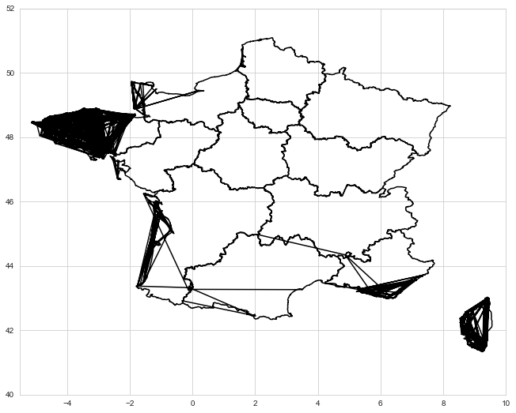

First dosis
Second dosis
Interpretation
This is a reprensentation of the French vaccination campain plotted as heatmaps on French geographic regions. The repartition maps present data expressed in number of people. The proportion maps present data expressed in percentage of the population of each age class and region. Please note that for readability purposes the heatmap scale of the proportion maps was adjusted as follows :
• multiplied by 15 for 0-39 years old
• multiplied by 5 for 40-74 years old
Discussion
• Key findings
- repartition / proportion analysis
The repartition maps show, for each age class, which region has consumed the most doses while the proportion maps show, for each age class, which region is the most vaccinated. Here, the region Île-de-France clearly required the most doses. Yet, Bourgogne-Franche-Comté is the most vaccinated region.
- vertical analysis
The comparison between the first dosis maps and the second dosis maps shows whether the doses were used for both the first and second injections or whether they were mostly used for the first injections only. As a result, Nouvelle-Aquitaine, among others, appears to have used doses for both injections whereas in Mayotte, almost all available doses where dedicated to first injections. Consequently, more people have received the vaccine but very few are fully vaccinated.
- horizontal analysis
The comparison between the different age classes shows that in its vaccination campaign, France is still at the stage of vaccinating the elderly. This is consistent with what was announced : "The vaccination was first opened via the messenger-RNA vaccines from Pfizer/BioNTech and Moderna to the Ehpad patients, then to the fragile or over 50 years old health care professionals and to the 5 million people over 75 years old. It was newly accelerated with the arrival of AstraZeneca's vaccine that has an easier logistic deployment but that is not recommended at this stage for people over 65 years old because of too little data. This product is prioritarily administrated to health care professionals and people between 50 and 64 years old who suffer comorbidity." [translated from Les Échos]
- single map analysis
The overall aspect of each proportion map shows that the vaccination is rather homogenous in the metropole, even though some regions have required more doses to get to this stage, as shown in the repartition maps. However, it is not homogenous between the metropole and the overseas regions, which are all behind in the campaign except for Guiana.
• Challenges
In the vaccination data, the information about the age classes below 18 years old were not presented. Therefore they had to be extracted from the "all ages" category.
The vaccination data was to be enriched with data from L'INSEE regarding the regions and population per region and age class.
When representing the data on the French map, a first trial with the library shapefile gave an unsatisfying result (see below). Given that the problem is inherent to the library, this approch was abandoned and replaced with using geopandas, which brought the advantage of objects compatibility.
Sources
From data.gouv.fr : Vaccination data • Map data
From www.insee.fr : Region data • Population data
From Les Échos : Campaign data
From Towards Data Science : Mapping with Geopandas
About Me

Myriam Ouanounou
MS student in Finance & Big Data at Neoma Business School, currently preparing CFA Level I for May 2021 session and working as a Data Scientist apprentice at BNP Paribas ; with one study abroad experience in Peru and several summer job experiences.
•
LinkedIn
•